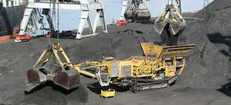

- Project Case
- Zenith Concrete Crushing Plant in Brunei
- Zenith Stone Crusher in Angola
- Manufacturing Sand From Rocks With B-VSI-7611 in UAE
- Zenith Screening Plant in Palestine
- Mexico 120-150tph Stone Production Line
- Peru 60-80 tph Stone Production Line
- Australia 150tph Stone Crushing and Screening Plant
- A Very Successful 200-250tph Crushing Plant in Kenya
- Kenya 30-40 TPH Stone Production Line
- Kenya 100 TPH Mobile Stone Production Line
- Crushing Plant in Ghana from Zenith 400-450tph
- Oman 200 TPH Stone Production Line
- Zenith Portable Limestone Crushing Line
- Zenith 300TPH Complete Crushing Line in Jummum, KSA
- Zenith XZM Ultrafine Mill in INDIA
- Limestone Grinding Plant in Belgium
- XZM221 Ultrafine Mill in Egypt
- Grinding Plant in Mexico
- Grinding Plant in Thailand
- Zenith 100-120tph Stationary Crushing Line in Addis Ababa
- Zenith 100-120 T/H Mobile Crushing Line in Nairobi
- Zenith 100-120tph Stationary Crushing Line in Kenya
- Tanzania 100-120 TPH Stone Production Line
- Zenith Cone Crusher Line In Indonesia
- Malaysia 300TPH Impact Crushing Plant
- Zenith 300 TPH Stone Production Line in Suhar-Liwa, Oman
- Zenith Stationary Basalt Crushing Line In Jeddah
- Aggregate Plant
- Mineral Plant
- Artificial Sand Making Plant
- Construction Waste Recycling Plant
Mineral processing spiral classifier

Mineral processing spiral classifier
1. Range
1.1 This standard specifies the entire process of mineral processing plant design practice and control responsibilities and requirements.
1.2 This standard applies to the Company's mineral processing technology management.
2. References
2.1 " China Nonferrous Metals Business Management Book"
2.2 "Technical Specification for the Production of non-ferrous metal mines "
3. Definitions
Mineral processing technology management is required by the Company’s physicochemical problems of mineral processing involved in the production process, the organization of principles of mineral processing and related professional and technical management.
4 Responsibilities
4.1 Deputy general manager in charge of technical management of organizational beneficiation technology .
4.2 Metal Working Committee is responsible for balancing the metal balance management.
4.3 Quality Inspection Department is responsible for technical indicators beneficiation testing, production technology oversight and preparation of metal balance report table.
4.4 Technical Management Department is responsible for organizing major process changes coordination.
4.5 Mineral processing plant responsible for the implementation and daily management of the production of technical indicators.
5. 1 Principles of mineral processing
5.1.1 Beneficiation technology personnel should be actively pursued in the production properties of ore , master processed ore sorting features , and master the different mineralization of ore minerals , ore grade and optional changes.
5.1.2 Concentrator technical staff should be organized under investigation bowl changes in different stages of mining deposits, ore zone, in conjunction with the production technology department to examine the nature of the ore and sampling experiment studies should be completed before dressing production.
5.1.3 Bowl under production units should be strictly according to plan the organization of the mine, the ore grade and ore remain optional relatively stable.
5.1.4 In the production process should strengthen scientific experiments, mineral separation process of continuous improvement and weaknesses, and solve the key problems in production and for the production of technical reserves.
5.1.5 Adhere to energy consumption in the production process, saving electricity, improve the power factor, and leverage backwater.
5.1.6 Concentrator must strictly implement the mine management system developed to achieve safe production and civilized production.
5.2 Mineral processing plant design practice and control: crushing and grinding
5.2.1 Mill crushing and screening process must ensure that the procedure under normal unloading ore and balanced continuous production processes.
5.2. 2 Lower crushing final product size, adhere to the basic principles of little more crushing mill. Each segment of the crusher product size broken , and broken port of discharge width ratio should follow the rules and require periodic inspection and adjustment , and fill operation records, control the final particle size .
5.2.3 Strictly controlled crushing and screening process parameters, improve screening efficiency, and ensure a balanced production capacity of process. More than the standard 2.4 chunks of ore allowed to enter the next process, mixed with pieces of iron ore and other debris should be excluded as soon as possible to ensure the safety of crushing equipment.
5.3 grinding and classification mineral processing technology
5.3.1 Strictly controlled grinding process parameters , the amount of ore milled , feed size , return the amount of sand and other technical conditions must follow the rules and requirements of timely inspection , adjustment, timing detection and fill records.
5.3.2 Milling ball into the volume, proportion, filling rate , and the additional amount of additional technical requirements should be proportional and fill operation records . Ball mill should be cleaned regularly, wear a packet to find out the law , to make corresponding technical summary.
5.3.3 Beneficiation technology should continue to explore, research and promotion of new wear-resistant, corrosion-resistant materials to extend the use of time device
5.3.4 Grinding process parameters, grinding concentration of 75% ; grading overflow concentration 38-43 % ; fineness of 67 to 72% -200 mesh ; by freshmen - 200 mesh count mill production capacity 1.3t/M3.H; return sand than 300%.
5.3.5 The operator should be careful operation, ground inspection, adjustment to improve the handling capacity of the station, reduce energy consumption , eliminate milling inverted and run rough idling phenomenon.
5.4 Flotation mineral processing technology
5.4.1 The implementation of sub- dosing, rational drug experimentally determined by beneficiation process requirements.
5.4.2 flotation operation should be done ground observation, ground adjustment and , strictly , " a quasi- three degrees " ( three degrees : Mine rack density , grinding fineness , pulp acidity reduction , one accurate : the administration to ACCURATE ) .
5.4.3 Add a point for each drug and dosage instructions should add technology to adjust. After on-site management and technical personnel to consent shall not be arbitrarily changed.
5.4.4 into factory agents to conduct inspection, modification and drug does not meet the quality standards shall warehousing use. Various concentrations of pharmaceutical formulation and operational procedures must be strictly in accordance with the requirements of the process carried out.
5.4.5 strictly enforce the rules and careful operation, and continuously improve product quality and mineral recovery. Maximize the recovery of valuable metals, reduce metal loss. Operations shall not run freely tail and so put slot. Special circumstances need to put slot length and above shall be subject to duty and agreed to make records.
5.4.6 Beneficiation process should remain relatively stable, for the test should be changed or feasibility study report.
5.4.7 Change the number to change jobs, change of major equipment, the larger structural changes to work flow and process locally by the deputy general manager of the responsible person in charge of dressing approval, the competent authorities grant preparation
5.4.8 Local process of structural adjustment and non-essential equipment, technology management report approved by the Ministry for the record. Improved local loop plant supervisor for approval by the engineer.
5 4.9 outsourcing team has no right to change the process. Temporary changes are accidental and should be promptly reported to the leadership or executive deputy general manager of the concentrator, to restore the original process immediately after the accident eliminated.
5 4.10 Transformation process is complete, test production after a period of time ( three to six months ) should propose technical summary report.
5.4.11 A biennial plant wash away the whole expedition, which grinding, classification, flotation, dewatering at least once a year and make inspection report . Check local process depending on production needs to be determined.
5 .4.12 million entries must be made transformation project proposal and feasibility study report, the technology projects included in the plan , plant ( the company ) to actively organize the construction , after completion of the project , commissioning and acceptance by the mining organization , design, construction units built drawings shall be responsible to settle modify items hundred brochures, covert project records, and organize the archive . Renovation project put into operation a year after a hundred entries should summarize and evaluate the technical and economic .
5.4.13 Million experimental research project implementation should be checked regularly, after the test is completed, the preparation of the final report experimental results validated after production, and achieved good results who should be a certain level of organizational identification.Research and Experimental Research optional nature of ore. 5.4.14 beneficiation test centers should be carried out. References and the promotion of new technology, new equipment, new materials and new pharmaceuticals, to promote and guide the on-site production services.
5 4.15 Consolidate, improve and enhance beneficiation automation and control .
5.5 Dehydration and concentrates, tailings management physicochemical problems of mineral processing
5 5.1 strictly follow the rules and technical conditions required to control the concentration of the thickener underflow , overflow water containing solids , and the filtrate water turbidity , filter vacuum degree of process parameters and product water , always check carefully recorded .
5.5. 2 closely monitor and prevent muddy run thickener, such as the enrichment process found skid pressure rake accident should take timely measures to rescue and fill out an accident report to analyze the reasons.
5.5.3 Dehydration process should be done without leakage pulp, timely replacement of worn cloth, to minimize the concentrate water to ensure water reaches Scheelite 2%. Pulp wash- water to leak through the ground in order to clarify the efflux timely and useful metal sedimentation tank cleanup, reduce metal loss.
5.5.4 Concentrate warehouse implement strict custody.
5.5.5 Concentrate factory must meet product standards, metrology and quality through testing.
5.5. 6 Tailings management by " tailings management standard " implementation.
5.6 Technical Inspection and metal balance
5.6.1 Metrology and Inspection Department under the leadership of vice president in charge of technical indicators concentrator production inspection and supervision.
5.6.2 According to the plan, and product standards, ore and manufactured products carry the quantity, quality inspection and supervision.
5.6.3 For beneficiation production process technology operating conditions, the metal wastage conduct regular checks and supervision , timely discovery problems, comments.
5.6.4 Concentrator ore, concentrates, tailings , milling capacity and fineness classifier overflow concentrated on class by the quality inspection department for proper sampling , testing, water samples must be taken regularly in the measurement point .
5.6.5 ore concentrates and plant output must be approved by the Ministry of sampling Metrology and Inspection , testing , measurement . Upon examination of the end product can not be shipped. Product quality of each batch of products manufactured in the total sample analysis results shall prevail.
5.6.6 Ore and concentrate measurement, laboratory must complete the original records, original records should be kept for at least one year.
5 .6.7 Measure must comply with national standards, belt, said the error should not exceed 1% , weighbridge error does not exceed the national standard. Of sampling equipment should be checked regularly maintained to ensure the representativeness and accuracy of the sample taken.
5.6.8 Strengthen technical training personnel to take the sample preparation and improve the technical quality. Continuously improve the detection efficiency and precision. Monthly production of mineral samples from the Department of Biotechnology, Comprehensive Planning Department in conjunction with the plant by 10 to 20% of the samples tested password pass rate, reaching more than 97% passing the tests.
5.6.9 is a comprehensive metal balance management, is a measure of plant production, technology and management level of the sign, metal balance must accurately reflect the actual production . Theoretical and practical recovery _1 ~ +2 % margin of error.
5.6.10 by metal balance management company "metal balance management standard " implementation.
Related equipment used in this plant:


Request a quotation
CONTACT US
0086-21-58386256
86-21-58383028
info@crusherproduct.net
SERVICE ONLINE >